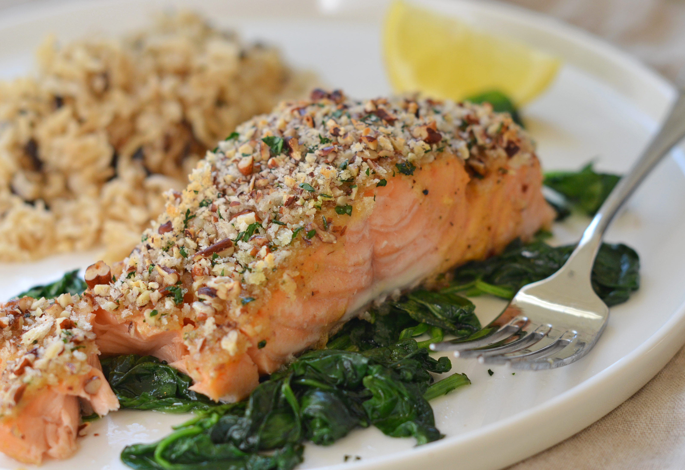

Dijon Salmon

This mustard-crusted salmon is a wonderful way to prepare fresh salmon fillets in the oven.
¼ cup butter, melted
3 tablespoons Dijon mustard
1 ½ tablespoons honey
¼ cup dry bread crumbs
¼ cup finely chopped pecans
4 teaspoons chopped fresh parsley
4 (4 ounce) fillets salmon
salt and pepper to taste
1 lemon, for garnish
Steps to create this delicious dijon salmon:
- Preheat the oven to 400 degrees F (200 degrees C).
- Stir together butter, mustard, and honey in a small bowl. Set aside.
- Mix together bread crumbs, pecans, and parsley in another bowl.
- Brush each salmon fillet lightly with honey mustard mixture.
- Sprinkle the tops of fillets with bread crumb mixture.
- Bake salmon in the preheated oven until it flakes easily with a fork, 12 to 15 minutes. Season with salt and pepper, and garnish with a wedge of lemon.